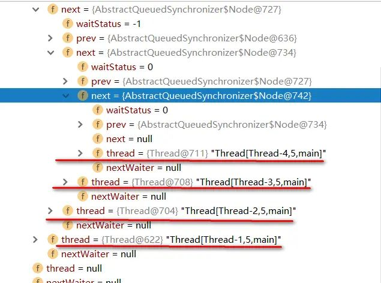
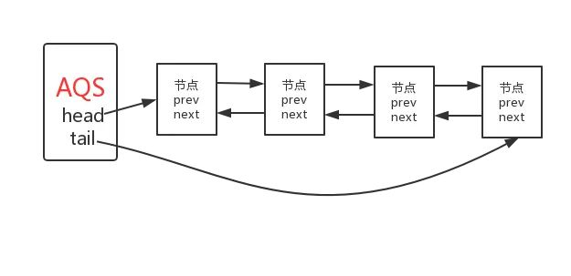
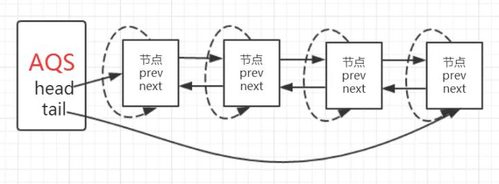
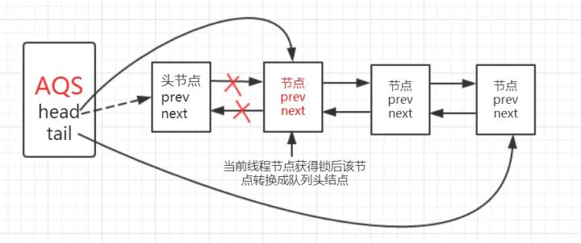
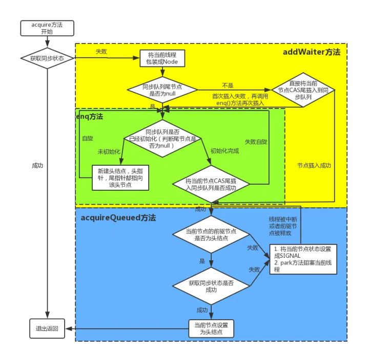
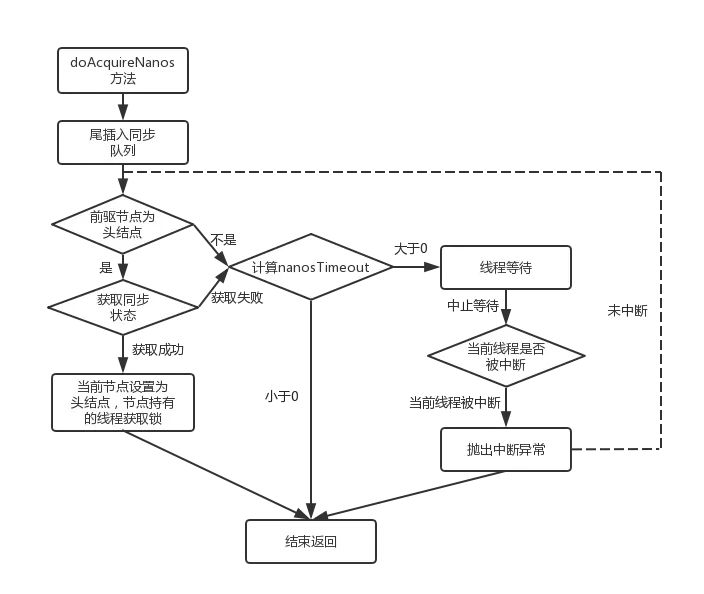

本人免费整理了Java高级资料，涵盖了Java、Redis、MongoDB、MySQL、Zookeeper、Spring Cloud、Dubbo高并发分布式等教程，一共30G，需要自己领取。
传送门：https://mp.weixin.qq.com/s/JzddfH-7yNudmkjT0IRL8Q
在上一篇文章中我们对lock和AbstractQueuedSynchronizer(AQS)有了初步的认识。在同步组件的实现中，AQS是核心部分，同步组件的实现者通过使用AQS提供的模板方法实现同步组件语义，AQS则实现了对同步状态的管理，以及对阻塞线程进行排队，等待通知等等一些底层的实现处理。AQS的核心也包括了这些方面:同步队列，独占式锁的获取和释放，共享锁的获取和释放以及可中断锁，超时等待锁获取这些特性的实现，而这些实际上则是AQS提供出来的模板方法，归纳整理如下：
独占式锁：
void acquire(int arg)：独占式获取同步状态，如果获取失败则插入同步队列进行等待； void acquireInterruptibly(int arg)：与acquire方法相同，但在同步队列中进行等待的时候可以检测中断； boolean tryAcquireNanos(int arg, long nanosTimeout)：在acquireInterruptibly基础上增加了超时等待功能，在超时时间内没有获得同步状态返回false; boolean release(int arg)：释放同步状态，该方法会唤醒在同步队列中的下一个节点
共享式锁：
void acquireShared(int arg)：共享式获取同步状态，与独占式的区别在于同一时刻有多个线程获取同步状态； void acquireSharedInterruptibly(int arg)：在acquireShared方法基础上增加了能响应中断的功能； boolean tryAcquireSharedNanos(int arg, long nanosTimeout)：在acquireSharedInterruptibly基础上增加了超时等待的功能； boolean releaseShared(int arg)：共享式释放同步状态
要想掌握AQS的底层实现，其实也就是对这些模板方法的逻辑进行学习。在学习这些模板方法之前，我们得首先了解下AQS中的同步队列是一种什么样的数据结构，因为同步队列是AQS对同步状态的管理的基石。
当共享资源被某个线程占有，其他请求该资源的线程将会阻塞，从而进入同步队列。就数据结构而言，队列的实现方式无外乎两者一是通过数组的形式，另外一种则是链表的形式。AQS中的同步队列则是通过链式方式进行实现。接下来，很显然我们至少会抱有这样的疑问：1. 节点的数据结构是什么样的？2. 是单向还是双向？3. 是带头结点的还是不带头节点的？我们依旧先是通过看源码的方式。
在AQS有一个静态内部类Node，其中有这样一些属性：
volatile int waitStatus //节点状态 volatile Node prev //当前节点/线程的前驱节点 volatile Node next; //当前节点/线程的后继节点 volatile Thread thread;//加入同步队列的线程引用 Node nextWaiter;//等待队列中的下一个节点
节点的状态有以下这些：
int CANCELLED = 1//节点从同步队列中取消 int SIGNAL = -1//后继节点的线程处于等待状态，如果当前节点释放同步状态会通知后继节点，使得后继节点的线程能够运行； int CONDITION = -2//当前节点进入等待队列中 int PROPAGATE = -3//表示下一次共享式同步状态获取将会无条件传播下去 int INITIAL = 0;//初始状态
现在我们知道了节点的数据结构类型，并且每个节点拥有其前驱和后继节点，很显然这是一个双向队列。同样的我们可以用一段demo看一下。
public class LockDemo {
private static ReentrantLock lock = new ReentrantLock();
public static void main(String[] args) {
for (int i = 0; i < 5; i++) {
Thread thread = new Thread(() -> {
lock.lock();
try {
Thread.sleep(10000);
} catch (InterruptedException e) {
e.printStackTrace();
} finally {
lock.unlock();
}
});
thread.start();
}
}
}
实例代码中开启了5个线程，先获取锁之后再睡眠10S中，实际上这里让线程睡眠是想模拟出当线程无法获取锁时进入同步队列的情况。通过debug，当Thread-4（在本例中最后一个线程）获取锁失败后进入同步时，AQS时现在的同步队列如图所示：

Thread-0先获得锁后进行睡眠，其他线程（Thread-1,Thread-2,Thread-3,Thread-4）获取锁失败进入同步队列，同时也可以很清楚的看出来每个节点有两个域：prev(前驱)和next(后继)，并且每个节点用来保存获取同步状态失败的线程引用以及等待状态等信息。另外AQS中有两个重要的成员变量：
private transient volatile Node head;
private transient volatile Node tail;
也就是说AQS实际上通过头尾指针来管理同步队列，同时实现包括获取锁失败的线程进行入队，释放锁时对同步队列中的线程进行通知等核心方法。其示意图如下：

通过对源码的理解以及做实验的方式，现在我们可以清楚的知道这样几点：
那么，节点如何进行入队和出队是怎样做的了？实际上这对应着锁的获取和释放两个操作：获取锁失败进行入队操作，获取锁成功进行出队操作。
我们继续通过看源码和debug的方式来看，还是以上面的demo为例，调用lock()方法是获取独占式锁，获取失败就将当前线程加入同步队列，成功则线程执行。而lock()方法实际上会调用AQS的acquire()方法，源码如下
public final void acquire(int arg) {
//先看同步状态是否获取成功，如果成功则方法结束返回
//若失败则先调用addWaiter()方法再调用acquireQueued()方法
if (!tryAcquire(arg) &&
acquireQueued(addWaiter(Node.EXCLUSIVE), arg))
selfInterrupt();
}
关键信息请看注释，acquire根据当前获得同步状态成功与否做了两件事情：1. 成功，则方法结束返回，2. 失败，则先调用addWaiter()然后在调用acquireQueued()方法。
获取同步状态失败，入队操作
当线程获取独占式锁失败后就会将当前线程加入同步队列，那么加入队列的方式是怎样的了？我们接下来就应该去研究一下addWaiter()和acquireQueued()。addWaiter()源码如下：
private Node addWaiter(Node mode) {
// 1\. 将当前线程构建成Node类型
Node node = new Node(Thread.currentThread(), mode);
// Try the fast path of enq; backup to full enq on failure
// 2\. 当前尾节点是否为null？
Node pred = tail;
if (pred != null) {
// 2.2 将当前节点尾插入的方式插入同步队列中
node.prev = pred;
if (compareAndSetTail(pred, node)) {
pred.next = node;
return node;
}
}
// 2.1\. 当前同步队列尾节点为null，说明当前线程是第一个加入同步队列进行等待的线程
enq(node);
return node;
}
分析可以看上面的注释。程序的逻辑主要分为两个部分：1. 当前同步队列的尾节点为null，调用方法enq()插入;2. 当前队列的尾节点不为null，则采用尾插入（compareAndSetTail（）方法）的方式入队。另外还会有另外一个问题：如果 if (compareAndSetTail(pred, node))为false怎么办？会继续执行到enq()方法，同时很明显compareAndSetTail是一个CAS操作，通常来说如果CAS操作失败会继续自旋（死循环）进行重试。因此，经过我们这样的分析，enq()方法可能承担两个任务：1. 处理当前同步队列尾节点为null时进行入队操作；2. 如果CAS尾插入节点失败后负责自旋进行尝试。那么是不是真的就像我们分析的一样了？只有源码会告诉我们答案:),enq()源码如下：
private Node enq(final Node node) {
for (;;) {
Node t = tail;
if (t == null) { // Must initialize
//1\. 构造头结点
if (compareAndSetHead(new Node()))
tail = head;
} else {
// 2\. 尾插入，CAS操作失败自旋尝试
node.prev = t;
if (compareAndSetTail(t, node)) {
t.next = node;
return t;
}
}
}
}
在上面的分析中我们可以看出在第1步中会先创建头结点，说明同步队列是带头结点的链式存储结构。带头结点与不带头结点相比，会在入队和出队的操作中获得更大的便捷性，因此同步队列选择了带头结点的链式存储结构。那么带头节点的队列初始化时机是什么？自然而然是在tail为null时，即当前线程是第一次插入同步队列。compareAndSetTail(t, node)方法会利用CAS操作设置尾节点，如果CAS操作失败会在for (;;)for死循环中不断尝试，直至成功return返回为止。因此，对enq()方法可以做这样的总结：
现在我们已经很清楚获取独占式锁失败的线程包装成Node然后插入同步队列的过程了？那么紧接着会有下一个问题？在同步队列中的节点（线程）会做什么事情了来保证自己能够有机会获得独占式锁了？带着这样的问题我们就来看看acquireQueued()方法，从方法名就可以很清楚，这个方法的作用就是排队获取锁的过程，源码如下：
final boolean acquireQueued(final Node node, int arg) {
boolean failed = true;
try {
boolean interrupted = false;
for (;;) {
// 1\. 获得当前节点的先驱节点
final Node p = node.predecessor();
// 2\. 当前节点能否获取独占式锁
// 2.1 如果当前节点的先驱节点是头结点并且成功获取同步状态，即可以获得独占式锁
if (p == head && tryAcquire(arg)) {
//队列头指针用指向当前节点
setHead(node);
//释放前驱节点
p.next = null; // help GC
failed = false;
return interrupted;
}
// 2.2 获取锁失败，线程进入等待状态等待获取独占式锁
if (shouldParkAfterFailedAcquire(p, node) &&
parkAndCheckInterrupt())
interrupted = true;
}
} finally {
if (failed)
cancelAcquire(node);
}
}
程序逻辑通过注释已经标出，整体来看这是一个这又是一个自旋的过程（for (;;)），代码首先获取当前节点的先驱节点，如果先驱节点是头结点的并且成功获得同步状态的时候（if (p == head && tryAcquire(arg))），当前节点所指向的线程能够获取锁。反之，获取锁失败进入等待状态。整体示意图为下图：

获取锁成功，出队操作
获取锁的节点出队的逻辑是：
//队列头结点引用指向当前节点
setHead(node);
//释放前驱节点
p.next = null; // help GC
failed = false;
return interrupted;
setHead()方法为：
private void setHead(Node node) {
head = node;
node.thread = null;
node.prev = null;
}
将当前节点通过setHead()方法设置为队列的头结点，然后将之前的头结点的next域设置为null并且pre域也为null，即与队列断开，无任何引用方便GC时能够将内存进行回收。示意图如下：

那么当获取锁失败的时候会调用shouldParkAfterFailedAcquire()方法和parkAndCheckInterrupt()方法，看看他们做了什么事情。shouldParkAfterFailedAcquire()方法源码为：
private static boolean shouldParkAfterFailedAcquire(Node pred, Node node) {
int ws = pred.waitStatus;
if (ws == Node.SIGNAL)
/*
* This node has already set status asking a release
* to signal it, so it can safely park.
*/
return true;
if (ws > 0) {
/*
* Predecessor was cancelled. Skip over predecessors and
* indicate retry.
*/
do {
node.prev = pred = pred.prev;
} while (pred.waitStatus > 0);
pred.next = node;
} else {
/*
* waitStatus must be 0 or PROPAGATE. Indicate that we
* need a signal, but don't park yet. Caller will need to
* retry to make sure it cannot acquire before parking.
*/
compareAndSetWaitStatus(pred, ws, Node.SIGNAL);
}
return false;
}
shouldParkAfterFailedAcquire()方法主要逻辑是使用compareAndSetWaitStatus(pred, ws, Node.SIGNAL)使用CAS将节点状态由INITIAL设置成SIGNAL，表示当前线程阻塞。当compareAndSetWaitStatus设置失败则说明shouldParkAfterFailedAcquire方法返回false，然后会在acquireQueued()方法中for (;;)死循环中会继续重试，直至compareAndSetWaitStatus设置节点状态位为SIGNAL时shouldParkAfterFailedAcquire返回true时才会执行方法parkAndCheckInterrupt()方法，该方法的源码为：
private final boolean parkAndCheckInterrupt() {
//使得该线程阻塞
LockSupport.park(this);
return Thread.interrupted();
}
该方法的关键是会调用LookSupport.park()方法（关于LookSupport会在以后的文章进行讨论），该方法是用来阻塞当前线程的。因此到这里就应该清楚了，acquireQueued()在自旋过程中主要完成了两件事情：
经过上面的分析，独占式锁的获取过程也就是acquire()方法的执行流程如下图所示：

独占锁的释放就相对来说比较容易理解了，废话不多说先来看下源码：
public final boolean release(int arg) {
if (tryRelease(arg)) {
Node h = head;
if (h != null && h.waitStatus != 0)
unparkSuccessor(h);
return true;
}
return false;
}
这段代码逻辑就比较容易理解了，如果同步状态释放成功（tryRelease返回true）则会执行if块中的代码，当head指向的头结点不为null，并且该节点的状态值不为0的话才会执行unparkSuccessor()方法。unparkSuccessor方法源码：
private void unparkSuccessor(Node node) {
/*
* If status is negative (i.e., possibly needing signal) try
* to clear in anticipation of signalling. It is OK if this
* fails or if status is changed by waiting thread.
*/
int ws = node.waitStatus;
if (ws < 0)
compareAndSetWaitStatus(node, ws, 0);
/*
* Thread to unpark is held in successor, which is normally
* just the next node. But if cancelled or apparently null,
* traverse backwards from tail to find the actual
* non-cancelled successor.
*/
//头节点的后继节点
Node s = node.next;
if (s == null || s.waitStatus > 0) {
s = null;
for (Node t = tail; t != null && t != node; t = t.prev)
if (t.waitStatus <= 0)
s = t;
}
if (s != null)
//后继节点不为null时唤醒该线程
LockSupport.unpark(s.thread);
}
源码的关键信息请看注释，首先获取头节点的后继节点，当后继节点的时候会调用LookSupport.unpark()方法，该方法会唤醒该节点的后继节点所包装的线程。因此，每一次锁释放后就会唤醒队列中该节点的后继节点所引用的线程，从而进一步可以佐证获得锁的过程是一个FIFO（先进先出）的过程。
到现在我们终于啃下了一块硬骨头了，通过学习源码的方式非常深刻的学习到了独占式锁的获取和释放的过程以及同步队列。可以做一下总结：
总体来说：在获取同步状态时，AQS维护一个同步队列，获取同步状态失败的线程会加入到队列中进行自旋；移除队列（或停止自旋）的条件是前驱节点是头结点并且成功获得了同步状态。在释放同步状态时，同步器会调用unparkSuccessor()方法唤醒后继节点。
独占锁特性学习
我们知道lock相较于synchronized有一些更方便的特性，比如能响应中断以及超时等待等特性，现在我们依旧采用通过学习源码的方式来看看能够响应中断是怎么实现的。可响应中断式锁可调用方法lock.lockInterruptibly();而该方法其底层会调用AQS的acquireInterruptibly方法，源码为：
xprivate void unparkSuccessor(Node node) {
/*
* If status is negative (i.e., possibly needing signal) try
* to clear in anticipation of signalling. It is OK if this
* fails or if status is changed by waiting thread.
*/
int ws = node.waitStatus;
if (ws < 0)
compareAndSetWaitStatus(node, ws, 0);
/*
* Thread to unpark is held in successor, which is normally
* just the next node. But if cancelled or apparently null,
* traverse backwards from tail to find the actual
* non-cancelled successor.
*/
//头节点的后继节点
Node s = node.next;
if (s == null || s.waitStatus > 0) {
s = null;
for (Node t = tail; t != null && t != node; t = t.prev)
if (t.waitStatus <= 0)
s = t;
}
if (s != null)
//后继节点不为null时唤醒该线程
LockSupport.unpark(s.thread);
}
在获取同步状态失败后就会调用doAcquireInterruptibly方法：
private void doAcquireInterruptibly(int arg)
throws InterruptedException {
//将节点插入到同步队列中
final Node node = addWaiter(Node.EXCLUSIVE);
boolean failed = true;
try {
for (;;) {
final Node p = node.predecessor();
//获取锁出队
if (p == head && tryAcquire(arg)) {
setHead(node);
p.next = null; // help GC
failed = false;
return;
}
if (shouldParkAfterFailedAcquire(p, node) &&
parkAndCheckInterrupt())
//线程中断抛异常
throw new InterruptedException();
}
} finally {
if (failed)
cancelAcquire(node);
}
}
关键信息请看注释，现在看这段代码就很轻松了吧:),与acquire方法逻辑几乎一致，唯一的区别是当parkAndCheckInterrupt返回true时即线程阻塞时该线程被中断，代码抛出被中断异常。
通过调用lock.tryLock(timeout,TimeUnit)方式达到超时等待获取锁的效果，该方法会在三种情况下才会返回：
我们仍然通过采取阅读源码的方式来学习底层具体是怎么实现的，该方法会调用AQS的方法tryAcquireNanos(),源码为：
public final boolean tryAcquireNanos(int arg, long nanosTimeout)
throws InterruptedException {
if (Thread.interrupted())
throw new InterruptedException();
return tryAcquire(arg) ||
//实现超时等待的效果
doAcquireNanos(arg, nanosTimeout);
}
很显然这段源码最终是靠doAcquireNanos方法实现超时等待的效果，该方法源码如下：
private boolean doAcquireNanos(int arg, long nanosTimeout)
throws InterruptedException {
if (nanosTimeout <= 0L)
return false;
//1\. 根据超时时间和当前时间计算出截止时间
final long deadline = System.nanoTime() + nanosTimeout;
final Node node = addWaiter(Node.EXCLUSIVE);
boolean failed = true;
try {
for (;;) {
final Node p = node.predecessor();
//2\. 当前线程获得锁出队列
if (p == head && tryAcquire(arg)) {
setHead(node);
p.next = null; // help GC
failed = false;
return true;
}
// 3.1 重新计算超时时间
nanosTimeout = deadline - System.nanoTime();
// 3.2 已经超时返回false
if (nanosTimeout <= 0L)
return false;
// 3.3 线程阻塞等待
if (shouldParkAfterFailedAcquire(p, node) &&
nanosTimeout > spinForTimeoutThreshold)
LockSupport.parkNanos(this, nanosTimeout);
// 3.4 线程被中断抛出被中断异常
if (Thread.interrupted())
throw new InterruptedException();
}
} finally {
if (failed)
cancelAcquire(node);
}
}
程序逻辑如图所示：

程序逻辑同独占锁可响应中断式获取基本一致，唯一的不同在于获取锁失败后，对超时时间的处理上，在第1步会先计算出按照现在时间和超时时间计算出理论上的截止时间，比如当前时间是8h10min,超时时间是10min，那么根据deadline = System.nanoTime() + nanosTimeout计算出刚好达到超时时间时的系统时间就是8h 10min+10min = 8h 20min。然后根据deadline - System.nanoTime()就可以判断是否已经超时了，比如，当前系统时间是8h 30min很明显已经超过了理论上的系统时间8h 20min，deadline - System.nanoTime()计算出来就是一个负数，自然而然会在3.2步中的If判断之间返回false。如果还没有超时即3.2步中的if判断为true时就会继续执行3.3步通过LockSupport.parkNanos使得当前线程阻塞，同时在3.4步增加了对中断的检测，若检测出被中断直接抛出被中断异常。
在聊完AQS对独占锁的实现后，我们继续一鼓作气的来看看共享锁是怎样实现的？共享锁的获取方法为acquireShared，源码为：
public final void acquireShared(int arg) {
if (tryAcquireShared(arg) < 0)
doAcquireShared(arg);
}
这段源码的逻辑很容易理解，在该方法中会首先调用tryAcquireShared方法，tryAcquireShared返回值是一个int类型，当返回值为大于等于0的时候方法结束说明获得成功获取锁，否则，表明获取同步状态失败即所引用的线程获取锁失败，会执行doAcquireShared方法，该方法的源码为：
private void doAcquireShared(int arg) {
final Node node = addWaiter(Node.SHARED);
boolean failed = true;
try {
boolean interrupted = false;
for (;;) {
final Node p = node.predecessor();
if (p == head) {
int r = tryAcquireShared(arg);
if (r >= 0) {
// 当该节点的前驱节点是头结点且成功获取同步状态
setHeadAndPropagate(node, r);
p.next = null; // help GC
if (interrupted)
selfInterrupt();
failed = false;
return;
}
}
if (shouldParkAfterFailedAcquire(p, node) &&
parkAndCheckInterrupt())
interrupted = true;
}
} finally {
if (failed)
cancelAcquire(node);
}
}
现在来看这段代码会不会很容易了？逻辑几乎和独占式锁的获取一模一样，这里的自旋过程中能够退出的条件是当前节点的前驱节点是头结点并且tryAcquireShared(arg)返回值大于等于0即能成功获得同步状态。
共享锁的释放在AQS中会调用方法releaseShared：
public final boolean releaseShared(int arg) {
if (tryReleaseShared(arg)) {
doReleaseShared();
return true;
}
return false;
}
当成功释放同步状态之后即tryReleaseShared会继续执行doReleaseShared方法：
private void doReleaseShared() {
/*
* Ensure that a release propagates, even if there are other
* in-progress acquires/releases. This proceeds in the usual
* way of trying to unparkSuccessor of head if it needs
* signal. But if it does not, status is set to PROPAGATE to
* ensure that upon release, propagation continues.
* Additionally, we must loop in case a new node is added
* while we are doing this. Also, unlike other uses of
* unparkSuccessor, we need to know if CAS to reset status
* fails, if so rechecking.
*/
for (;;) {
Node h = head;
if (h != null && h != tail) {
int ws = h.waitStatus;
if (ws == Node.SIGNAL) {
if (!compareAndSetWaitStatus(h, Node.SIGNAL, 0))
continue; // loop to recheck cases
unparkSuccessor(h);
}
else if (ws == 0 &&
!compareAndSetWaitStatus(h, 0, Node.PROPAGATE))
continue; // loop on failed CAS
}
if (h == head) // loop if head changed
break;
}
}
这段方法跟独占式锁释放过程有点点不同，在共享式锁的释放过程中，对于能够支持多个线程同时访问的并发组件，必须保证多个线程能够安全的释放同步状态，这里采用的CAS保证，当CAS操作失败continue，在下一次循环中进行重试。
关于可中断锁以及超时等待的特性其实现和独占式锁可中断获取锁以及超时等待的实现几乎一致，具体的就不再说了，如果理解了上面的内容对这部分的理解也是水到渠成的。
通过这篇，加深了对AQS的底层实现更加清楚了，也对了解并发组件的实现原理打下了基础，学无止境，继续加油:);如果觉得不错，请给赞，嘿嘿。